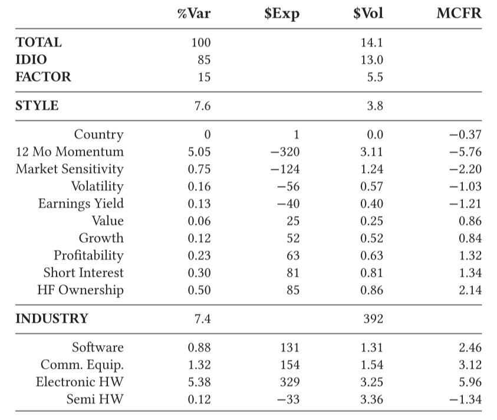

（1）学习如何调整组合头寸来降低因子风险。
（2）学习如何考虑风险参数和风险控制。
（3）学习如何规划系统性的投资组合构建。
如果你是一个基本面投资者，更大风险暴露可能使你的投资组合遭受损失。但只要你的投资组合足够分散，将不会承担较大的因子风险。之所以要分散组合来管理风险，主要原因是：（1）因子投资是一个发达的邻域，里面有很多专业的参与者，对于他们来说，获得好的投资业绩有较大挑战，而一般投资者在因子投资上没有任何优势；（2）因子模型能够通过分离关注点将风险因子暴露情况付诸实践，具体来讲，投资组合业绩可以被分解为系统性成分与特质成分。更重要的是这些成分是可以投资的，你可以投资一个或多个成分。关注特质成分可以让你更清楚你的决策，一旦投资组合发展不及预期，可以让你更好地适应和诊断。（3）你的投资者付钱给你不是为了复制市场、乘风而动或做空已经做空的股票。有时候你可能需要做以上所有的事情，但不是所有的时候。你对投资者的受托责任要求你关注业绩。
由于我们并不是生活在一个因子自由的世界，风险在哪里？或因子是什么，仍然需要我们不断去探索和识别，因此，因子是系统性风险的代理指标。基于目前已经发现的因子，我们可以将投资组合收益分解成各个系统性因子和特质因子，具体如下：
$$ \[\begin{align} PnL = & idio PnL+\\ & Factor PnL\\ & Factor PnL_1+& Factor PnL_2+ \dots \\ & explote_1 \times Factor return_1+ & \ Factor PnL_2+\dots \\ & (\beta_1 \times NMV_1+ \dots) \times Factor return_1+ & Factor PnL_2+\dots \end{align}\]
$$
从上述公式可以看出，因子的风险暴露驱动了投资组合的业绩，毫无疑问，它也驱动了系统性风险。在真实的市场中，有90到150个因子，组合收益很难完全被分解到每一个因子上，因此，我们一般只关注几个相对影响的因子。为了量化因子的相对重要性，我们使用组合风险分解的分析工具。

分解结果如上表所示，\(Var\)是每组或子组总体方差的百分比。之所以是方差而不是波动，主要原因是方差是两个个独立收益的和，方差的可加性更有利于计算，子分组是行业和风格，他们的总方差百分比为15%，这描述了每一个子集对总风险的贡献。\(Exp\)和\(Vol\)是每个因子的风险暴露和波动，\(MCFR\)是因子的边际贡献。
如果没有长期风险管理政策，战术管理就毫无用处。这些政策应该以一种有原则但又直观的方式对风险进行限制。具体有以下几个方面的工作：
1.设定一个因子风险限，最小化投资组合的特质波动，明确每个因子上的风险暴露。
2.设定一个市场风险限，如果你做多或做空一个投资组合，将会暴露市场风险，这样可以通过对冲来管理市场风险。
3.设置单只股票持股上限，一个投资组合通常由多种类型的资产构成，之所以要分散，一方面是因为相同行业的公司类似，盈利风险相同，这样会暴露更多的风险。另一方面，人们对单一公司的了解有限。
4.设置单个因子的暴露上限。